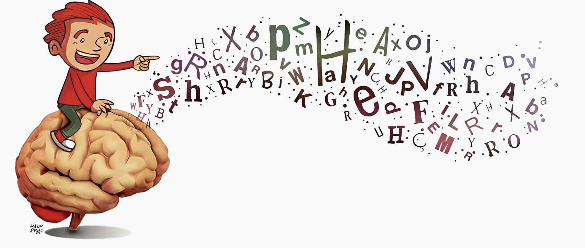

Inicio
Sobre
Serviços
Contato

Dr. Lewsley
Dra. Priscila
Dra. Elaine
Sobre
Desde 2020, a Fonart oferece atendimentos fonoaudiológicos especializados em Franca-SP, com foco na prevenção, avaliação e reabilitação das dificuldades de comunicação, linguagem, voz, audição e motricidade orofacial. Trabalhamos com dedicação, acolhimento e profissionalismo para ajudar crianças a se comunicarem com mais clareza, confiança e autonomia. Cada paciente é único – por isso, nossos atendimentos são personalizados, respeitando o ritmo e as necessidades de cada um.
Serviços
Avaliação e terapia da fala
Reabilitação de voz
Fonoaudiologia infantil
Terapia para gagueira
Motricidade orofacial
Distúrbios da deglutição
© 2025 Fonart. Todos os direitos reservados.
Desenvolvido por (16) 99348-8159